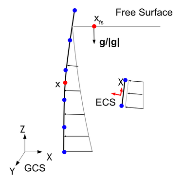
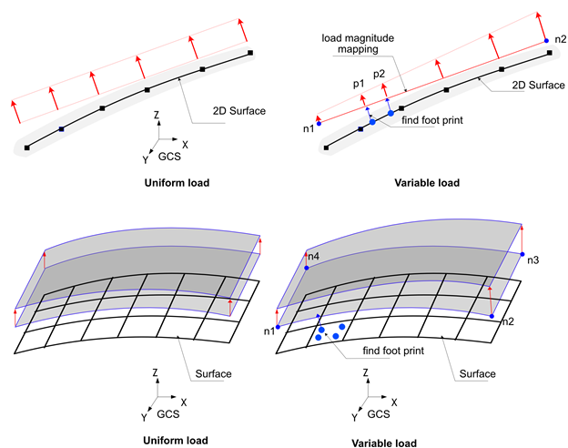
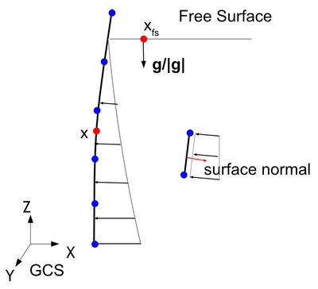
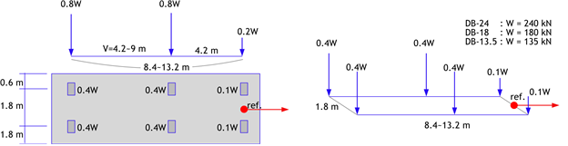

6. Load
The load is defined using *Load. Each load has a unique name, and duplicate names cannot be assigned. *Load is distinguished from *Constraint in that it specifies a certain load value to be applied within an analysis step. For example, a displacement load is defined as *Load, whereas a boundary condition with zero displacement (Support) is defined as *Constraint.
Loads can be applied either statically or dynamically (time-dependent). For instance, *Load, Type=Concentric, *Load, Type=Displacement, *Load, Type=Gravity, *Load, Type=Temperature, *Load, Type=LineDistributed, and *Load, Type=SurfaceDistributed are static loads when only their magnitudes are specified, but they become dynamic loads when a time function is provided. In contrast, *Load, Type=LineMoving, *Load, Type=SurfaceMoving, *Load, Type=PedestrianMoving, and *Load, Type=Earthquake cannot be applied statically and are always time-dependent loads.
When a load is applied within an analysis step (*Step), it can exist in three states: Created, Propagated, and Faded. Created means that the load is generated in the current analysis step, Propagated means that the load was generated in a previous analysis step and is maintained in the current step, and Faded means that the load is removed in the current step. The state and application of a load differ depending on whether it is a static or dynamic load and whether the analysis step depends on physical time.
▪ Time-dependent Analysis Steps
- Includes Quasi-static analysis (
*Step, Type=Static, Quasi) and Dynamic analysis (*Step, Type=Dynamic). - Only Created and Propagated states are allowed, and their behavior is the same in both states.
- The Faded state cannot exist (the load is immediately deleted when deactivated).
- Static loads are applied with the specified magnitude, independent of time changes within the analysis step.
- Dynamic loads are applied according to the time defined in the analysis step.
▪ Static Analysis Steps
- Includes Static analysis (
*Step, Type=Static,*Step, Type=Static, Arclength) where the load is applied based on a load factor. - Static loads in the Created state are applied according to the load factor.
- Dynamic loads in the Created state are not applied (there is no physical time flow).
- In the Propagated state, the final load from the previous step is maintained.
- In the Faded state, the final load from the previous step is reduced to zero by the end of the current analysis step.
- Temperature loads (
*Load, Type=Temperature) cannot be in the Created or Faded states in a*Step, Type=Static, Arclengthanalysis step.
6.1 *Load
Define load
*Load, Type=load_type, Name=load_name, ...
...
Keyword line
- Type=type: Type of load
- Concentric: Concentrated load applied to a node
- Displacement: Displacement load with a non-zero value
- SeepageFlux: Surface flux boundary for seepage analysis
- SeepageWaterLevel: Reservoir water-level boundary for seepage analysis
- SeismicRelative: Seismic acceleration time history load based on relative motion formulation
- Gravity: Self-weight due to gravitational acceleration
- Temperature: Load induced by temperature changes acting on an element
- LineDistributed: Distributed load applied to a line composed of beam or truss elements
- SurfaceDistributed: Distributed load applied to a surface formed by elements
- LineMoving: Moving load applied to a line composed of beam or truss elements
- SurfaceMoving: Moving load applied to a surface formed by elements
- PedestrianMoving: Pedestrian load applied to a surface formed by elements
- Name=load_name: Name of the load
6.1.1 *Load, Type=Concentric
Concentrated load applied to a node
*Load, Type=Concentric, Name=name, Func=timeFunction
targetNode|targetNGroup, oneDof, value, fnIdx, CS=orientation
...
Keyword line
- Func=timeFunction: Time function to be used for time-dependent analysis (
*Step, Type=Static, Quasiand*Step, Type=Dynamic) (optional).
First data line and subsequent data lines
- targetNode: Target node (required)
- targetNGroup: Node group for nodal load(required). The targetNGroup can be specified as an nset, a surface, or a node number pattern (
start:end:spacing, withspacing=1being optional). If a surface is specified, it refers to all nodes that belong to that surface. - oneDof: Target DOF. Available DOFs are X, Y, Z, RX, RY, RZ, T, PA, and PS. PA denotes an acoustic-pressure DOF load, and PS denotes a seepage-pressure DOF load. Combinations such as X|Y are not allowed.
- value: Applied load value (required). If oneDof is X, Y, or Z, the unit is [F]. If oneDof is RX, RY, or RZ, the unit is [F*L]. If oneDof is T, the unit is [F*L/T]. If oneDof is PA, the unit is [F/L]. If oneDof is PS, the unit is [L^3/T].
- fnIdx: Index of the time series function within
timeFunction(1-based index) (optional; default: 1). - CS=orientation: Coordinate system in which the concentric load is applied. Specify the name defined via
*CoordinateSystem, Type=Orientation. If omitted, the global coordinate system (GCS) is used. (optional)
The first entry in the data line searches for possible targets in the order of nset, surface, node number pattern, or node number. Note that predefined nset or surface names may consist of numbers, so caution is required.
If the same nodal degree of freedom is specified multiple times, no error is raised; the corresponding loads are combined and applied cumulatively.
When a local coordinate system is specified, the given load is interpreted relative to that coordinate system. Internally, the load is transformed and applied in the global coordinate system (GCS). Output results are provided in the GCS by default. If results are needed in the local coordinate system, this must be explicitly specified in the *Print or *History commands. The *Output command does not support specifying a local coordinate system, but hfStudio allows postprocessing and conversion of results into a local coordinate system.
Example
*Load, Type=Concentric, Name=A
1001, X, 10.
*Funtion, Type=MultiLinear, Name=Cyclic
0, 0
1, 1
2, 0
3, 1
4, 0
*Load, Type=Concentric, Name=B, Func=Cyclic
base, X, 10.
*Funtion, Type=TimeSignal, Name=timeLoad
0.02, 1024 # dt, ntime
elcenX.dat, 1, 3.01
elcenYZ.dat, 2, 3.01
*Load, Type=Concentric, Name=TimeLoading, Func=timeLoad
101, X, 1, 1
101, Y, 1, 2
101, Z, 1, 3
*CoordinateSystem, Type=Orientation, Name=inc
1,1,0, 0,1,0
*Load, Type=Displacement Name=InclinedLoad
101, X, 1. CS=inc
6.1.2 *Load, Type=Displacement
Nodal displacement
*Load, Type=Displacement, Name=name, Func=timeFunction
targetNode|taregtNGroup, oneDof, value, {fnIdD, fnIdV, fnIdA}|D=fnIdD|V=fnIdV|A=fnIdA, CS=ocs}
...
Keyword line
- Func=timeFunction: Time function to be used for time-dependent analysis (
*Step, Type=Static, Quasiand*Step, Type=Dynamic) (optional).
First data line and subsequent data lines
- targetNode: Target node (required)
- targetNGroup: Node group for nodal displacement(required). The targetNGroup can be specified as an nset, a surface, or a node number pattern (
start:end:spacing, withspacing=1being optional). If a surface is specified, it refers to all nodes that belong to that surface. - oneDof: Target DOF. Available DOFs are X, Y, Z, RX, RY, RZ, P, T, and H. H is a convenience input for total head and is internally converted to P. Combinations such as X|Y are not allowed. (required)
- value: Prescribed value (required). If oneDof is X, Y, or Z, the unit is [L]. If oneDof is RX, RY, or RZ, it is dimensionless. If oneDof is P, the unit is [F/L^2]. If oneDof is T, the unit is [K]. If oneDof is H, the unit is [L].
- fnIdD, fnIdV, fnIdA: Index of the time series function within
timeFunctionfor displacement, velocity, and acceleration respectively (1-based index) (optional; default: 1). If 0 is specified, the values of the corresponding history is always treated as 0. Displacement is used for*Step, Type=Static, Quasi, and displacement, velocity, and acceleration are used for*Step, Type=Dynamic. - A=fnIdA: Index of the acceleration time function in
timeFunction(1-based index). Velocity and displacement functions are automatically integrated. timeFunction should be defined by*Function, Type=TimeSignal. - V=fnIdV: Index of the velocity time function in
timeFunction(1-based index). Acceleration and displacement functions are automatically differentiated and integrated. timeFunction should be defined by*Function, Type=TimeSignal. - D=fnIdD: Index of the displacement time function in
timeFunction(1-based index). Velocity and acceleration functions are automatically differentiated. timeFunction should be defined by*Function, Type=TimeSignal. - CS=ocs: Coordinate system in which the displacement load is applied. Valid for X, Y, Z, RX, RY, RZ Dof. Specify the name defined via
*CoordinateSystem, Type=Orientation. If omitted, the global coordinate system (GCS) is used. (optional)
The first entry in the data line searches for possible targets in the order of nset, surface, node number pattern, or node number. Note that predefined nset or surface names may consist of numbers, so caution is required.
If the same nodal degree of freedom is specified multiple times, no error is raised; the corresponding loads are combined and applied cumulatively.
Time histories obtained by differentiation or integration using A=fnIdxA, V=fnIdxV, or D=fnIdxD are output to a file named name-generated.csv.
When a local coordinate system is specified, the given load is interpreted relative to that coordinate system. Internally, this is handled by imposing a multi-point constraint (MPC). Output results are provided in the GCS by default. If results are needed in the local coordinate system, this must be explicitly specified in the *Print or *History commands. The *Output command does not support specifying a local coordinate system, but hfStudio allows postprocessing and conversion of results into a local coordinate system.
P represents the dynamic pressure of an acoustic element and the pore pressure of a seepage element. A node shall not be connected to both acoustic and seepage elements at the same time, and such a case is treated as a modeling error. When seepage elements are used, the total head can be specified using the symbol H. In this case, the pore pressure is converted as (weightDensity) * (totalHead – z). This conversion requires the weightDensity of water, and this value is extracted from the seepage elements connected to the node. If multiple seepage elements are connected to the node, their weightDensity values shall be identical, with a tolerance of 1E-5.;
Example
*Load, Type=Displacement Name=A
1001, X, 10.
*Load, Type=Displacement, Name=C
101, X, 100
101, X, 200 # Raising error
*Load, Type=Displacement, Name=Pressure
101, P, 100
*Load, Type=Displacement, Name=Head
101, H, 100
*Funtion, Type=MultiLinear, Name=Cyclic
0, 0
1, 1
2, 0
3, 1
4, 0
*Load, Type=Displacement Name=B, Func=Cyclic
base, X, 10.
*Funtion, Type=TimeSignal, Name=motion
0.02, 1024 # dt, ntime
elcenD.dat, 1, 3.01
elcenVA.dat, 2, 3.01
*Load, Type=Displacement, Name=B, Func=motionA
base, X, 1, 1, 2, 3
*Load, Type=Displacement, Name=B, Func=motionB
baseB, X, 1, A=1 # V, D is generated
*CoordinateSystem, Type=Orientation, Name=inc
1,1,0, 0,1,0
*Load, Type=Displacement, Name=InclinedLoad
101, X, 0.1, CS=inc
6.1.3 *Load, Type=SeismicRelative
Seismic acceleration time history load based on relative motion formulation
*Load, Type=Earthquake, Name=name, Func=timeFunction
x, y, z, fnIdx
...
Keyword line
- Func=timeFunction: Seismic acceleration history (required)
First data line and subsequent data lines
- x, y, z: Directional vector of applying acceleration history. The input vector is normalized to have a magnitude of 1.
- fnIdx: Index of the time series function within
timeFunction(1-based index) (optional; default: 1).
*Load, Type=SeismicRelative is only applicable to dynamic analysis, and the calculated response represents relative motion with respect to the input ground motion. It is important to note that the response calculated with *Load, Type=SeismicRelative is a relative response, unlike the absolute response computed when applying motion to a support point as total motion using *Load, Type=Displacement.
In *Load, Type=SeismicRelative, the external force acts as follows:
It is also applicable to models using acoustic solid elements, in which case it is as follows:
Example
*Function Type=TimeSignal Name=acc1d
0.02, 2670
BaseMotionX.inp, 1, 1 # file, nseries, scalFactor
*Load, Type=SeismicRelative, Name=Earthquake1D, Func=acc1d
1,0,0
*Function Type=TimeSignal Name=acc3d
0.02, 2670
BaseMotionX.inp, 1, 1 # file, nseries, scalFactor
BaseMotionY.inp, 1, 1 # file, nseries, scalFactor
BaseMotionZ.inp, 1, 1 # file, nseries, scalFactor
*Load, Type=SeismicRelative, Name=Earthquake3D, Func=acc3d
1,0,0,1
0,1,0,2
0,0,1,3
6.1.4 *Load, Type=Gravity
Self-weight due to gravitational acceleration
*Load, Type=Gravity, Name=name, Func=timeFunction
targetElset[, gx, gy, gz[, fnIdx]][, Scope=Structural|NonStructural|All]
...
Keyword line
- Func=timeFunction: Time function to be used for time-dependent analysis (
*Step, Type=Static, Quasiand*Step, Type=Dynamic) (optional). If the function has multiple series, the first series is used.
First data line and subsequent data lines
- targetElset: Target elset (required)
- gx, gy, gz: Components of the gravity vector [L/T^2] (optional; default: 0,0,0).
- fnIdx: Index of the time series function within
timeFunction(1-based index) (optional; default: 1). - Scope=Structural|NonStructural|All: Mass contribution used to generate self-weight for
targetElset(optional; default:All).StructuralexcludesNSLayer/NSArea,NonStructuraluses onlyNSLayer/NSArea, andAlluses both structural and non-structural contributions.
To activate the Gravity Load, the elements must have mass properties defined in their material properties.
Scope applies only while generating the Gravity load vector; it does not change the mass matrix used by dynamic analysis. Scope=NonStructural produces no self-weight for elements without NSLayer or NSArea.
Example
The following example separates self-weight for a deck section that may include NSLayer or NSArea. Use Scope=All for structural and pavement self-weight together, Scope=Structural to exclude the pavement contribution, and Scope=NonStructural to apply only the pavement contribution. In frequency or dynamic steps, the mass matrix is assembled from the active elements as modeled; a Gravity load Scope affects only the gravity load vector when that load is activated.
*Load, Type=Gravity, Name=SelfWeight
Slab, 0., 0., -9.81
Girder, 0., 0., -9.81
*Load, Type=Gravity, Name=G_Total
Deck, 0., 0., -9.81, Scope=All
*Load, Type=Gravity, Name=G_Structural
Deck, 0., 0., -9.81, Scope=Structural
*Load, Type=Gravity, Name=G_NonStructural
Deck, 0., 0., -9.81, Scope=NonStructural
# Static self-weight including the pavement layer.
*Step, Type=Static, Name=SW_Total
*Activate, Type=Element
Deck
*Activate, Type=Constraint
Support
*Activate, Type=Load
G_Total
# Static self-weight excluding the pavement layer.
*Step, Type=Static, Name=SW_Structural
*Activate, Type=Element
Deck
*Activate, Type=Constraint
Support
*Activate, Type=Load
G_Structural
# Static self-weight from the pavement layer only.
*Step, Type=Static, Name=SW_NonStructural
*Activate, Type=Element
Deck
*Activate, Type=Constraint
Support
*Activate, Type=Load
G_NonStructural
# Dynamic mass is controlled by the active elements and their sections.
# If Deck has NSLayer, this modal step includes the pavement mass even
# without activating a Gravity load.
*Step, Type=Frequency, Name=Modal_TotalMass
10
*Activate, Type=Element
Deck
*Activate, Type=Constraint
Support
# To exclude pavement mass in a dynamic analysis, use a structural-only
# deck model or elset whose section does not contain NSLayer.
*Step, Type=Frequency, Name=Modal_StructuralMass
10
*Activate, Type=Element
Deck_StructuralOnly
*Activate, Type=Constraint
Support
6.1.5 *Load, Type=Temperature
Load induced by temperature changes acting on an element
*Load, Type=Temperature, Name=name Func=timeFunction
targetElset, T, Ty, Tz, fnIdx
...
Keyword line
- Func=timeFunction: Time function to be used for time-dependent analysis (
*Step, Type=Static, Quasiand*Step, Type=Dynamic) (optional). If the function has multiple series, the first series is used.
First data line and subsequent data lines
- targetElset: Target elset (required)
- T: Uniform temperature change [K] (optional, default 0.)
- Ty, Tz: Temperature gradient changes [K/L]. (optional, default 0,0)
- fnIdx: Index of the time series function within
timeFunction(1-based index) (optional; default: 1).
Used when a uniform temperature change is applied to the elements.
▪ Caution
- Temperature loads cannot be *Activated or *Inactivated in
*Step, Type=Static, Arclength. However, if applied in a previous analysis step, the magnitude can be maintained. That is, only thePropagatedstate is allowed;
Example
*Load, Type=Temperature Name=A
beam, 10.
6.1.6 *Load, Type=LineDistributed
Distributed load applied to a line composed of beam or truss elements
*Load, Type=LineDistributed, Name=name, Func=timeFunction
line, GCS|ECS, px, py, pz, mx, my, mz, fnIdx
line, GCS|ECS, n1, n2, px1, py1, pz1, mx1, my1, mz1, px2, py2, pz2, mx2, my2, mz2, fnIdx
line, HydroStaticPressure, gamma, gdx, gdy, gdz, fsx, fsy, fsz, width, +Y|-Y|+Z|-Z, fnIdx
...
Keyword line
- Func=timeFunction: Time function to be used for time-dependent analysis (
*Step, Type=Static, Quasiand*Step, Type=Dynamic) (optional). If the function has multiple series, the first series is used.
First data line and subsequent data lines
- line: Target element set composed of beam or truss elements. (required)
- GCS|ECS: Coordinate system in which the distributed load is defined. (required)
- HydroStaticPressure: Special hydrostatic line-load mode. The resulting load is always applied in the element coordinate system (ECS).
- px, py, pz, mx, my, mz: Uniformly distributed load components. px, py, and pz are distributed force components per unit length [F/L], and mx, my, and mz are distributed moment components per unit length [F]. For 2D beam elements, only px, py, and mz are used. For
T3D2truss elements, px, py, and pz are applied as equivalent nodal loads, while mx, my, and mz specified inGCSorECSinput are not applied. - n1, n2, px1, ..., mz2: Applies distributed load components px1 to mz1 at node n1 and px2 to mz2 at node n2, respectively, and interpolates the values between them using the line shape functions. The units of px1, py1, pz1, px2, py2, and pz2 are [F/L], and the units of mx1, my1, mz1, mx2, my2, and mz2 are [F].
- gamma: Fluid unit weight [F/L^3] for
HydroStaticPressure. Use \(\gamma=\rho|g|\) when starting from density and gravitational acceleration. - gdx, gdy, gdz: Components of the gravity direction vector. The vector is normalized internally.
- fsx, fsy, fsz: Coordinates of any point on the free surface [L].
- width: Tributary width or unit thickness [L] used to convert pressure [F/L^2] to line load [F/L].
- +Y|-Y|+Z|-Z: ECS transverse direction in which the equivalent
HydroStaticPressureline load acts. These tokens are based on each beam element's ECS, not GCS. For 2D beam elements, use only+Yor-Y. - fnIdx: Index of the time series within timeFunction (1-based index) (optional; default: 1).
The line must consist only of beam elements or only of truss elements (mixed use is not allowed), and it does not need to be a continuous line. For T3D2 truss elements, GCS, ECS, and HydroStaticPressure inputs are all calculated as equivalent nodal loads on translational DOFs. However, the distributed moment components mx, my, and mz specified in GCS or ECS input are not applied because truss elements have no rotational DOFs.
GCS|ECS Distributed Load
When applying the load in a trapezoidal shape, the load magnitude at the element nodes forming each line segment is found by mapping to the segment connecting nodes n1 and n2, as shown in the figure. In this case, if a beam element cannot find a perpendicular projection to the mapping line, no load is applied to that beam element.
 Fig. 6.2-1. Line Distributed Load
Fig. 6.2-1. Line Distributed Load
HydroStaticPressure
Fluid hydrostatic pressure can be calculated by specifying the gravity direction vector and the coordinate \(\mathbf x_{fs}\) of a point on the free surface. At a point \(\mathbf x\) on a beam element, the pressure is
Here, \(\gamma\) is the fluid unit weight, and \(\hat{\mathbf g}\) is the unit vector in the gravity direction. The equivalent line-load magnitude applied to the beam element is calculated considering the width b as follows.
The calculated load is transformed and applied in the selected ECS transverse direction as
Here, \(\mathbf e_{dir}\) is one of +Y, -Y, +Z, or -Z in the element coordinate system. The calculated load is evaluated at integration points along the beam element and integrated into equivalent nodal loads using the integration order specified by *Control, NonsmoothIntegrationLevel=level. If the free surface cuts through the middle of a beam element, increasing NonsmoothIntegrationLevel can represent the wet/dry boundary more finely. The consistency of the beam ECS directions is the user's responsibility.

Fig. 6.2-1a. Line Hydrostatic PressureExample
*Load, Type=LineDistributed, Name=Load1
side1, GCS, 0.,10.,1.
*Load, Type=LineDistributed Name=Load2
side1, ECS, 1, 2, 10.,0.,0.,0,0,0, 20.,0.,0.,0,0,0
*Load, Type=LineDistributed,ECS Name=Load3
side1, ECS, 10.
side2, ECS, 0.,10.,1.,0,0,0
side3, ECS, 1, 2, 10.,0.,0.,0,0,0,20.,0.,0.,0,0,0
*Load, Type=LineDistributed, Name=HydroLine
lining, HydroStaticPressure, 9810, 0, 0, -1, 0, 0, 20, 1.0, -Y
6.1.7 *Load, Type=SurfaceDistributed
Distributed load applied to a surface formed by elements
*Load, Type=SurfaceDistributed, Name=name, Func=timeFunction
surface, Pressure|AcousticFlux, p, fnIdx
surface, Pressure|AcousticFlux, n1, n2, p1, p2, fnIdx
surface, Pressure|AcousticFlux, n1, n2, n3, p1, p2, p3, fnIdx
surface, Pressure|AcousticFlux, n1, n2, n3, n4, p1, p2, p3, p4, fnIdx
surface, HydroStaticPressure, gamma, gdx, gdy, gdz, fsx, fsy, fsz, +N|-N, fnIdx
surface, Traction, tx, ty, tz, fnIdx
surface, Traction, n1, n2, tx1, ty1, tx2, ty2, fnIdx
surface, Traction, n1, n2, n3, tx1, ty1, tz1, tx2, ty2, tz2, tx3, ty3, tz3, fnIdx
surface, Traction, n1, n2, n3, n4, tx1, ty1, tz1, tx2, ty2, tz2, tx3, ty3, tz3, tx4, ty4, tz4, fnIdx
...
Keyword line
- Func=timeFunction: Time function to be used for time-dependent analysis (
*Step, Type=Static, Quasiand*Step, Type=Dynamic) (optional). If the function has multiple series, the first series is used.
First data line
- surface: Target surface
- Pressure|HydroStaticPressure|Traction|AcousticFlux: Load type selector.
- p: Uniform scalar boundary load. If the load type is Pressure, the unit is [F/L^2]. If the load type is AcousticFlux, the unit is [F/L^3].
- gamma: Fluid unit weight [F/L^3] for
HydroStaticPressure. Use \(\gamma=\rho|g|\) when starting from density and gravitational acceleration. - gdx, gdy, gdz: Gravity direction vector. It is normalized internally, so only the direction is used.
- fsx, fsy, fsz: A point on the free surface [L]. For 2D surfaces, integration point coordinates are evaluated with \(z=0\), so define the direction and free-surface point consistently in the XY plane.
- +N|-N: Surface normal direction selector for
HydroStaticPressure(optional; default:-N).-Napplies pressure opposite to the surface normal, and+Napplies pressure in the surface normal direction. - n1, n2, p1, p2: Applies p1 and p2 at nodes n1 and n2, respectively, and interpolates the values between them. The units of p1 and p2 are the same as p. Applicable to 2D surfaces formed by the faces of 2D solid elements.
- n1, n2, n3, p1, p2, p3: Applies p1, p2, and p3 at nodes n1, n2, and n3, respectively, and interpolates the values between them using triangular shape functions. The units of p1, p2, and p3 are the same as p. Applicable to 3D surfaces formed by the faces of 3D solid elements or shell elements.
- n1, n2, n3, n4, p1, p2, p3, p3: Applies p1, p2, p3, and p4 at nodes n1, n2, n3, and n4, respectively, and interpolates the values between them using quadrilateral shape functions. The units of p1, p2, p3, and p4 are the same as p. Applicable to 3D surfaces.
- tx, ty, tz: Uniform traction load [F/L^2]. For 2D surfaces, tz is ignored.
- n1, n2, tx1, ty1, tx2, ty2: Variable traction values [F/L^2] for 2D surfaces.
- n1, n2, n3, tx1, ty1, tz1, tx2, ty2, tz2, tx3, ty3, tz3: Variable traction values [F/L^2] for 3D surfaces with triangular interpolation.
- n1, n2, n3, tx1, ty1, tz1, ..., tx4, ty4, tz4: Variable traction values [F/L^2] for 3D surfaces with quadrilateral interpolation.
- fnIdx: Index of the time series within timeFunction (1-based index) (optional; default: 1).
This is a distributed load applied to a surface formed by element faces. A surface must be composed of either faces of 2D solid elements or faces of 3D solid or shell elements; 2D element faces and 3D element faces cannot be mixed.
Pressure|AcousticFlux|Traction Distributed Load
Pressure and AcousticFlux are scalar surface loads, while Traction is a surface-force vector defined in the GCS. Pressure acts in the opposite direction of the surface normal, and Traction acts in the direction of the input vector.
Uniform loads are applied with a constant value over the target surface. Variable loads define load values at the corner nodes of the mapping surface, and each face evaluates the value by projecting its integration points onto that mapping surface. Each face is integrated using the integration order specified by *Control, NonsmoothIntegrationLevel=level. For a 4-node face, the default is a 5x5 grid of integration points.

Fig. 6.2-3. Surface Distributed LoadHydroStaticPressure
Fluid hydrostatic pressure can be calculated by specifying the gravity direction vector and the coordinate \(\mathbf x_{fs}\) of a point on the free surface. At a surface integration point \(\mathbf x\), the pressure is
Here, \(\gamma\) is the fluid unit weight, and \(\hat{\mathbf g}\) is the unit vector in the gravity direction. By default, or when -N is specified, the calculated pressure is applied in the opposite direction of the surface normal as
When +N is specified, the same pressure magnitude is applied in the surface normal direction:
Here, \(\mathbf n\) is the surface normal. Because HydroStaticPressure varies in space, every face is integrated using the integration order specified by *Control, NonsmoothIntegrationLevel=level.

Fig. 6.2-4. Hydrostatic PressureLoad Type Compatibility
Pressure, HydroStaticPressure, and Traction may be used together in one SurfaceDistributed load because they all represent force per surface area. They cannot be mixed with AcousticFlux.
Example
*Surface, Type=Element, Name=surface1
1@slab1
*Surface, Type=Element, Name=surface2
1@slab2
*Load, Type=SurfaceDistributed, Name=load1
surface1, Pressure, 10
*Load, Type=SurfaceDistributed, Name=load2
surface1, Pressure, 10
surface2, Pressure, 1, 10, 11, 2, 0,0, 10, 10
*Load, Type=SurfaceDistributed, Name=hydro
wallSurface, HydroStaticPressure, 9810, 0, 0, -1, 0, 0, 20, +N
6.1.8 *Load, Type=SeepageFlux
Surface flux for steady or transient seepage analysis
*Load, Type=SeepageFlux, Name=name, Func=timeFunction
surface, q, fnIdx
surface, q, PMax|PMin, pressureLimit, fnIdx
surface, n1, n2, q1, q2, fnIdx
surface, n1, n2, n3, q1, q2, q3, fnIdx
surface, n1, n2, n3, n4, q1, q2, q3, q4, fnIdx
...
Keyword line
- Func=timeFunction: Optional function that scales the requested flux. If the function has multiple series, select the series for each data line with
fnIdx.
First data line
- surface: Target surface formed by element faces.
- q: Requested uniform seepage flux [L/T].
- PMax|PMin: Optional pressure-limit selector.
PMaximposes an upper pressure bound andPMinimposes a lower pressure bound. Omitting both applies an ordinary flux boundary without a pressure limit. - pressureLimit: Constant pressure bound [F/L^2]. It is not multiplied by
Funcor by the steady-step load factor. - n1, n2, q1, q2: Fluxes at the two mapping nodes for a 2D surface. Values between them are interpolated.
- n1, n2, n3, q1, q2, q3: Fluxes at the three mapping nodes for a triangular 3D surface.
- n1, n2, n3, n4, q1, q2, q3, q4: Fluxes at the four mapping nodes for a quadrilateral 3D surface.
- fnIdx: Index of the series within
timeFunction(1-based; optional, default: 1). It may be supplied only whenFuncis present.
The load can be active only in Seepage, Steady or Seepage, Transient steps. A propagated load must be removed with *Inactivate, Type=Load before a non-seepage step. In a steady seepage step, [T] in [L/T] follows the global UnitSystem time field. In a transient seepage step, it follows the step TUnit instead.
Without PMax or PMin, the requested flux is applied directly. A pressure limit is available only for a uniform flux. At a PMax boundary, pressure above pressureLimit switches the affected node to \(p=\text{pressureLimit}\); at a PMin boundary, pressure below the limit does the same. When the requested flux becomes admissible again, the node returns to flux control. Active-set state is restored consistently after cutback.
If a target node already has a prescribed or constrained pressure DOF, PSF, or SeepageWaterLevel boundary, that existing boundary controls the pressure and the SeepageFlux pressure limit is ignored at the shared node; the requested flux is still assembled. Pressure-limited surfaces may overlap at a node only when their limit type and pressureLimit are identical, in which case the common pressure constraint is merged. Conflicting limits, including a PMax and PMin pair at the same node, are not allowed.
Func scales \(q\) using the selected fnIdx. In a steady Path=Load step, the load factor likewise ramps \(q\). The pressure limit remains constant. Variable fluxes use the same surface interpolation and integration rules as variable scalar SurfaceDistributed loads.
For result interpretation, FE retains the requested equivalent nodal flux. While flux control is active, FN is zero and FE is the actual applied flux. While pressure control is active, FN contains the reaction correction, so the actual equivalent nodal boundary flux is FE + FN; FN represents rejected rainfall or unmet evaporation demand.
At a shared node whose pressure is controlled by PSF, the existing PSF output policy may leave FN at zero. In that case, do not interpret FE + FN as the actual boundary flux; obtain the actual nodal flux from FK in steady analysis and from FK + FC in transient analysis.
Example
*Load, Type=SeepageFlux, Name=flux
surface1, 10
surface2, 1, 10, 11, 2, 0, 0, 10, 10
*Load, Type=SeepageFlux, Name=rainfall
groundSurface, 2e-5, PMax, 0
*Load, Type=SeepageFlux, Name=evaporation
groundSurface, -5e-6, PMin, -100000
6.1.9 *Load, Type=LineMoving
Moving load applied to a line composed of beam or truss elements
# Direct form : When defining the load directly
*Load, Type=LineMoving, Name=name
speed, line1, line2, direction, s0, y0, z0
s, y, z, Px, Py, Pz, Mx, My, Mz
...
# KL-510 form : When generating KL-510 loads according to design standards
*Load, Type=LineMoving, Name=name
speed, line1, line2, direction, s0, y0, z0
KL-510, ax, ay, az{, ToDirectForm}
lSpacing, tSpacing1, tSpacing2, ...
# DB-24, DB-18, DB-13.5 form : When generating DB-24, DB-18, DB-13.5 loads according to design standards
*Load, Type=LineMoving, Name=name
speed, line1, line2, direction, s0, y0, z0
DB-24|DB-18|DB-13.5, ax, ay, az{, ToDirectForm}
lSpacing, tSpacing1, tSpacing2, ...
aSpacing1, aSpacing2, ...
First data line
- speed: Moving speed [L/T] (required). [T] follows the global
UnitSystemtime field inDynamicsteps and the stepTUnitinStatic, Quasisteps. - line1, line2: Elsets composed of beam or truss elements (line1 is required, and line2 is optional). line2 is only used in Direct form. In Design Code form, leave line2 empty; if direction/reference fields are used, keep the empty comma field.
- direction: Moving load travel direction. Can be
forwardorbackward. Default isforward. - s0: Reference distance[L]. Defined as the distance from the start point of the target beam/truss elset. Default is 0.
- y0, z0: Initial offset in the cross-section of the beam element in the ECS [L]. Default is 0,0.
Second data line and subsequent lines for Direct form
- s: Distance from the reference point [L] (required). The load is applied at the
s0 + sdistance from the start point of the target beam/truss elset. - y, z: Additional offset in the cross-section of the beam element in the ECS [L]required). The total offset is calculated as y + y0, z + z0.
- Px, Py, Pz, Mx, My, Mz: Load vector in the GCS. Px, Py, and Pz are [F], and Mx, My, and Mz are [F*L]. If the line segment is not a beam element, Mx, My, and Mz are ignored. (optional, but more than one term should be given. default: 0,0,0,0,0,0).
Second data line for KL-510, DB-24, DB-18, DB-13.5 form
- ax, ay, az: Directional vector of the axial load in the GCS. If it is not a unit vector, it will be normalized. For example, (0,0,-1) indicates the direction opposite to gravity.
- ToDirectForm: If specified, the load is converted and saved as a Direct form.
Third data line for KL-510, DB-24, DB-18, DB-13.5 form
- lSpacing: Longitudinal spacing distance [L] between multiple transverse spacings, indicating the distance between each individual vehicle load in the direction of travel.
- tSpacing1, tSpacing2, ...: Transverse spacing distances [L]. At least one transverse spacing must be specified, and individual vehicle loads are generated at these spacings along with
lSpacing.
Fourth data line for DB-24, DB-18, DB-13.5
- aSpacing1, aSpacing2, ...: Last axle spacing values [L]. At least one must be specified, and the physical spacing after unit conversion should be between 4.2 m and 9.0 m. The number of specified axle spacings determines how many moving loads are added, considering
lSpacing,tSpacing1,tSpacing2, etc.
LineMoving load specifies a moving load applied to a line composed of beam elements or truss elements. It can be defined in two main forms: Direct form and Design code form. In Direct form, the user directly specifies the axle loads that make up the moving load, while Design code form, such as KL-510, DB-24, etc., generates moving loads defined by the design code. To use Design code form, a global UnitSystem defined by *Environment, Type=UnitSystem is required.
The LineMoving load changes the position of the load according to the given speed. For dynamic analysis (*Step, Type=Dynamic) or time-dependent static analysis (*Step, Type=Static, Quasi), the position is updated based on the speed. In other analysis conditions, the position does not change (no movement in general static analysis). The line must consist only of beam elements or only of truss elements (mixing of both types is not allowed), and it must form a continuous single line.
 Fig. 6.2-2. Line Moving Load
Fig. 6.2-2. Line Moving Load
For loads like railway loads that traverse two lines, two lines can be specified. In this case, the two lines must be parallel and of equal length. If two lines are specified, the given load is equally distributed (½) between each line.
For detailed explanations of the Design code forms such as KL-510, DB-24, etc., refer to *Load, Type=SurfaceMoving.
Example
*Environment, Type=UnitSystem
kN-m-s-K
*Load, Type=LineMoving Name=L1
10, L1
0., 0., 0., 0.,0.,10.
-1., 0., 0., 0.,0.,20.
-3., 0., 0., 0.,0.,20.
*Load, Type=LineMoving, Name=L2
10., L1
0.. 0., 0., 0.,0.,-10.,0.,0.,10.
-1.. 0., 0., 0.,0.,-20.,0.,0.,20.
-3.. 0., 0., 0.,0.,-20.,0.,0.,20.
*Load, Type=LineMoving, Name=L3
10., L1, , forward, -2, 0, 1.5
KL-510, 0, 0, -1
100, -0.5, 0.5
*Load, Type=LineMoving, Name=L4
10., L1, , backward, -3, 0, 1.5
DB-24, 0, 0, -1
100, -0.5, 0.5
4.2, 9.0
6.1.10 *Load, Type=SurfaceMoving
Moving load applied to a surface formed by elements
# Direct form : When defining the load directly
*Load, Type=SurfaceMoving, Name=name
speed, surface, vx, vy, vz, rx, ry, rz, tol
x, y, Px, Py, Pz
...
# KL-510 form : When generating KL-510 loads according to design standards
*Load, Type=SurfaceMoving, Name=name
speed, surface, vx, vy, vz, rx, ry, rz, tol
KL-510, ax, ay, az{, ToDirectForm}
lSpacing, tSpacing1, tSpacing2, ...
# DB-24, DB-18, DB-13.5 form : When generating DB-24, DB-18, DB-13.5 loads according to design standards
*Load, Type=SurfaceMoving, Name=name
speed, surface, vx, vy, vz, rx, ry, rz, tol
DB-24|DB-18|DB-13.5, ax, ay, az{, ToDirectForm}
lSpacing, tSpacing1, tSpacing2, ...
aSpacing1, aSpacing2, ...
First data line
- speed: Moving speed [L/T]. (required). [T] follows the global
UnitSystemtime field inDynamicsteps and the stepTUnitinStatic, Quasisteps. - surface: Trget surface (required)
- vx,vy,vz: Drection of moving in global coordinate system(required). If 2D surface, vz is neglected.
- rx,ry,rz: Reference point coordinates in the GCS [L] (optional; default: 0,0,0). If the target is a 2D surface, rz is ignored.
- tol: Contact tolerance [L] (optional; default: 1E-4 in the current model coordinate unit).
Second data line and subsequent lines for Direct form
- x,y: Offset coordinates in the local plane with the current reference point as the origin [L]. If the target is a 2D surface, y is ignored.
- Px,Py,Pz: Offset coordinates in the local plane with the current reference point as the origin [L]. If the target is a 2D surface, y is ignored.
Second data line for KL-510, DB-24, DB-18, DB-13.5 form
- This form requires a global
*Environment, Type=UnitSystem. Its force and length units are used for the design-code vehicle loads, standard vehicle dimensions, and spacing inputs. - ax, ay, az: Directional vector of axial load in the GCS. If it is not a unit vector, it will be normalized. For example, (0,0,-1) indicates the direction opposite to gravity.
- ToDirectForm: If specified, the load is converted and saved as a Direct form.
Third data line for KL-510, DB-24, DB-18, DB-13.5 form
- lSpacing: Longitudinal spacing distance between multiple transverse spacings [L], indicating the distance between each individual vehicle load in the direction of travel.
- tSpacing1, tSpacing2, ...: Transverse spacing distances [L]. At least one transverse spacing must be specified, and individual vehicle loads are generated at these spacings along with
lSpacing.
Fourth data line for DB-24, DB-18, DB-13.5
- aSpacing1, aSpacing2, ...: Last axle spacing values [L]. At least one must be specified, and the physical spacing after unit conversion should be between 4.2 m and 9.0 m. The number of specified axle spacings determines how many moving loads are added, considering
lSpacing,tSpacing1,tSpacing2, etc.
This defines a moving load applied to a surface formed by the faces of elements. The moving load changes its position based on the given speed. For dynamic analysis (*Step, Type=Dynamic) or time-dependent static analysis (*Step, Type=Static, Quasi), the position is updated according to the speed. In other analysis conditions, the position does not change (no movement in general static analysis). As with LineMoving, [T] in speed [L/T] follows the global UnitSystem time field in Dynamic steps and the step TUnit in Static, Quasi steps.
The SurfaceMoving load can be defined in two main forms: Direct form and Generation form. In Direct form, the user directly specifies the axle loads that constitute the moving load, and it can be defined on both 3D and 2D surfaces.
 Fig. 6.2-4. Moving Load on 3D Surface
Fig. 6.2-4. Moving Load on 3D Surface
 Fig. 6.2-5. Moving Load on 2D Surface
Fig. 6.2-5. Moving Load on 2D Surface
Generation form is used to generate axle loads based on a few parameters, supporting standard truck loads defined by design codes such as KL-510, DB-24, DB-18, and DB-13.5. This form is only applicable to 3D surfaces formed by 3D solid elements or shell elements. Internally, it is converted to a Direct form. To verify the converted axle loads, set the ToDirectForm option.
KL-510 load is defined in the Road Bridge Design Code Limit State Design Method (KDS 24 12 21), while the three types of DB loads (DB-24, DB-18, DB-13.5) are vehicle loads used in road bridge design codes before 2010. Internally, these are generated as axle loads in the same format as Direct form by considering the current global UnitSystem, lSpacing, tSpacing1, tSpacing2, ..., aSpacing1, aSpacing2, .... The design-code vehicle loads and standard vehicle dimensions are fixed physical values and are converted to the global UnitSystem defined by *Environment, Type=UnitSystem.
 Fig. 6.2-6. KL-510 Moving Load
Fig. 6.2-6. KL-510 Moving Load

Fig. 6.2-7. DB-24, DB-18, DB-13.5 Moving LoadlSpacing is the longitudinal spacing of vehicles in the direction of travel, while tSpacing1, tSpacing2, ... are transverse spacing distances. For KL-510 loads, if tSpacing1 and tSpacing2 are specified, the loads are generated as shown in the figure below. A load group corresponding to one vehicle is generated at a position offset by tSpacing1 transversely. Subsequently, a load group corresponding to one vehicle is generated again at a longitudinal distance offset by lSpacing and a transverse distance offset by tSpacing2. In other words, as many vehicle loads as specified by tSpacing# are generated at a distance of lSpacing. This allows the definition of the effect of vehicle separation within a lane as a single moving load. When specifying lSpacing, set it as "bridge length + truck length" to prevent two vehicles from simultaneously entering the bridge.
 Fig. 6.2-8. KL-510 Load Based on Longitudinal and Lateral Spacing of Vehicle Movement Direction
Fig. 6.2-8. KL-510 Load Based on Longitudinal and Lateral Spacing of Vehicle Movement Direction
For DB loads, the distance between the last axles must be analyzed by varying it between 4.2-9m. Similar to specifying tSpacing#, as many axle loads as specified by lSpacing are generated at each longitudinal distance.
For the Generation form, the length required for analysis (the length required for the vehicle to completely pass over the bridge) is calculated using the following criteria:
- lSpacing: Bridge length + Length of one vehicle
- Required analysis length:
Number of tSpacing * Number of aSpacing * lSpacing(KL-510 omits the number of aSpacings)
The analysis time for *Step, Type=Static, Quasi can be determined considering speed to ensure that the required analysis length is fully covered.
Example
*Environment, Type=UnitSystem
kN-m-s-K
*Surface, Type=Element, Name=surf
1@upperface
*Load, Type=SurfaceMoving, Name=L1
10, surf, 1., 0., 0, 1., 0. , 0.
0. 0. 10. 0. 0.
-1. 0. 20. 0. 0.
-3. 0. 20. 0. 0.
-0.5, +0.5, 0.
*Load, Type=SurfaceMoving, Name=L2
10, surf, 1., 0., 0, 1. 0. 0.
KL-510, 0, 0, -1
100, -0.5, 0.5
*Load, Type=SurfaceMoving, Name=L3
10, surf, 1., 0., 0, 1. 0. 0.
DB-24, 0, 0, -1
100, -0.5, 0.5
4.2, 9.0
*Step, Type=Static, Quasi, Name=LL
Uniform, 1, 29, TUnit=s
*Activate, Type=Element
slab
*Activate, Type=Constraint
support
*Activate, Type=Load
L1
...
6.1.11 *Load, Type=PedestrianMoving
Pedestrian load applied to a surface formed by elements
*Load, Type=PedestrianMoving, Name=Moving
surface, vx, vy, vz, rx, ry, rz, tol
interval, stride
SINE, Wx,Wy,Wz,F/W,contactDuration
First data line and subsequent data lines
- surface: target surface (required)
- vx,vy,vz: Moving direction vector in the global coordinate system (required). The vector is normalized to a unit vector internally; its magnitude is not used as speed.
- rx ry rz: Reference point coordinates in the GCS [L] (optional; default: 0,0,0).
- tol: contact tolerance (optional, default 1E-4)
Second data line
- interval: interval [T]. [T] follows the global
UnitSystemtime field inDynamicsteps and the stepTUnitinStatic, Quasisteps. - stride: stride
3rd data line
- SINE: means sine function
- Wx, Wy, Wz: Weight
- F/W: F/W ratio
- contactDuration: contact duration [T]. [T] follows the global
UnitSystemtime field inDynamicsteps and the stepTUnitinStatic, Quasisteps.
PedestrianMoving advances the load position by stride every interval. The vx,vy,vz vector only defines the travel direction and is normalized internally. The walking speed is therefore controlled by stride/interval, not by the magnitude of vx,vy,vz. [T] in interval and contactDuration follows the global UnitSystem time field in Dynamic steps and the step TUnit in Static, Quasi steps.
Example
*Surface, Type=Element, Name=L1
upperface 1 # element_set iface
*Load, Type=PedestrianMoving, Name=Moving
surf, 0.591, 0, -0.377, -15.6425,-.138,9.9655 # surf, vx, vy, vz, rx, ry, rz
0.5,0.7 # interval, stride
SINE,0,-700,0,2,0.02 # type,Wx,Wy,Wz,F/W,contactDuration
6.1.12 *Load, Type=SeepageWaterLevel
Defines a reservoir water-level boundary that automatically changes between hydrostatic head and an exposed potential seepage face.
*Load, Type=SeepageWaterLevel, Name=name, Func=timeFunction
targetNode|targetNGroup|surface, referenceHead
...
Keyword line
- Func=timeFunction: Optional scalar function that multiplies
referenceHead. The function shall contain exactly one series. Its time coordinate follows theTUnitof the transient seepage step.
First data line and subsequent data lines
- targetNode|targetNGroup|surface: Node, node set, node expression, or surface on the reservoir boundary.
- referenceHead: Reference reservoir total head [L]. Without
Func, the water level is constant. WithFunc, the water level isreferenceHead * timeFunction(t).
At each analysis endpoint, a target node at elevation \(z\) is treated as submerged when \(H_w \ge z\) and is assigned
When \(H_w < z\), the node is exposed and follows the potential seepage-face rule: zero pressure is retained only for outflow, while an inflow reaction releases the node to the natural no-flow condition. Do not list the same node in *InteractionControl, Type=PSF; the duplicate boundary is rejected.
SeepageWaterLevel is valid only in seepage steps. A constant definition may be used in steady or transient seepage. A definition with Func requires transient seepage; using it in any other step is an error.
Loads propagate automatically to a following Step. Before a non-seepage Step, explicitly remove this boundary with *Inactivate, Type=Load; otherwise the propagated load is rejected. In steady seepage, SeepageWaterLevel always applies the specified physical water level in full, so Path=Load does not scale it by the load factor.
For a submerged endpoint or an exposed endpoint retained at zero pressure, FN records the boundary reaction (nodal flow). After an exposed endpoint is released to the natural no-flow condition, its FN is zero.
Comparison with *Load, Type=Displacement
In steady seepage, SeepageWaterLevel produces the same total-head boundary as Displacement, H when the target contains only nodes at or below a constant water level. For example, if every node in ReservoirSubmerged has elevation \(z\le100\ \mathrm{m}\), the following loads both impose \(H=100\ \mathrm{m}\) at every target node and therefore produce the same solution.
*Load, Type=Displacement, Name=ReservoirHead100
ReservoirSubmerged, H, 100
*Load, Type=SeepageWaterLevel, Name=ReservoirLevel100
ReservoirSubmerged, 100
The definitions differ when the target contains nodes above the water level. Displacement, H imposes the specified total head at every selected node, whereas SeepageWaterLevel treats nodes with \(z>H_w\) as exposed and applies the potential seepage-face rule. The two forms are therefore interchangeable when a fixed submerged boundary has already been separated. Use SeepageWaterLevel when selecting the entire slope at once or when the water level moves during a transient analysis.
Example
*Load, Type=SeepageWaterLevel, Name=ReservoirWaterLevel, Func=DrawdownScale
Reservoir, 8
6.1.13 *Load, Type=FreeFieldSeismic [Experimental]
Free-field load for layered ground in soil-structure interaction seismic analysis.
*Load, Type=FreeFieldSeismic, Name=name, Func=acc
{DRM,surface,nset}|{Prescribed, nset}
RigidBedrock|ElasticBedrock, Direct|Outcrop, iLayer
rcx, rcy, x0, y0, top
E, nu, density, xi, h, n
...
Keyword line
- acceleration: Acceleration time-history function [L/T^2]. It shall be a TimeSeries function. It shall have two components for 2D analysis and three components for 3D analysis.
First data line
- DRM, surface, nset: Applies the effective load used in the Domain Reduction Method (DRM). surface is the boundary surface on which the effective load acts. nset is the node set on which displacement, velocity, and acceleration are prescribed when a rigid bedrock condition is used. If surface or nset is specified but does not exist, an empty surface or node set is created automatically.
- Precribed, nset: Applies ground motion directly in the form of prescribed displacement, velocity, and acceleration. nset is the node set to which the motion is applied. If it is specified but does not exist, an empty node set is created automatically.
Second data line
- RigidBedrock|ElasticBedrock: Specifies the rigid bedrock or elastic bedrock (elastic halfspace) condition. For RigidBedrock, nset in DRM, surface, nset shall be specified. For ElasticBedrock, nset shall not exist. If ElasticBedrock is specified, the last layer represents the elastic bedrock, and its height (hn) shall be an arbitrary sufficiently large value for 1D wave-propagation analysis.
- Direct|Outcrop, iLayer: Specifies the input type and the layer-interface index (1-based) at which the time history is applied. If Direct is specified, the input is treated as a directly given acceleration history. If Outcrop is specified, it is treated as outcrop motion. If iLayer=1, only Direct is allowed. For RigidBedrock, iLayer may be specified up to '(number of layers)+1', but when it is specified as the bottommost '(number of layers)+1', only Direct is allowed. For ElasticBedrock, iLayer may be specified up to '(number of layers)'.
Third data line
- rcx, rcy: Horizontal apparent slowness components of the incident seismic wave [T/L], i.e., reciprocals of the apparent horizontal propagation velocities. rcx=1/cx and rcy=1/cy, where cx=cp/lx=cs/mx and cy=cp/ly=cs/my. Here, cp and cs are the P-wave and S-wave velocities, and (lx, ly, lz) and (mx, my, mz) are the unit direction vectors of the P-wave and S-wave, respectively. rcx and rcy are used instead of cx and cy because the direction cosines lx, mx, ly, and my may become zero. If rcx=rcy=0, vertical incidence is assumed.
- x0, y0, top: Reference point of the incident seismic wave and the position of the ground surface [L].
Fourth data line and subsequent data lines
- E, nu, density, xi, h, n: Young's modulus, Poisson's ratio, mass density, damping ratio, layer thickness, and the number of elements in the vertical direction for the layered ground measured from the ground surface. E is [F/L^2], nu is dimensionless, density is [F*T2/L4], xi is dimensionless, h is [L], and n is a dimensionless integer. If ElasticBedrock is specified, the last layer shall be assigned an arbitrary sufficiently large depth for 1D wave-propagation analysis.